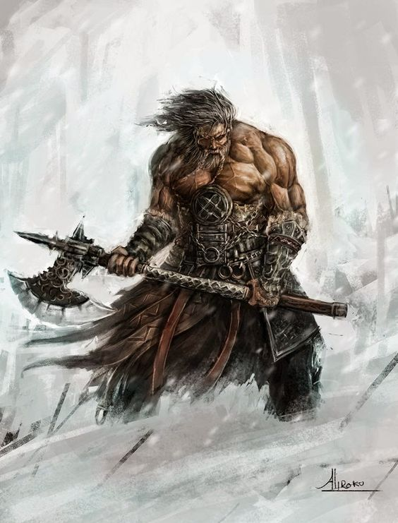

Um humano alto membro de alguma tribo caminha em meio a uma nevasca, coberto por peles e empunhando seu machado.
Ele gargalha à medida que avança em direção do gigante do gelo que ousou caçar os alces que o seu povo arrebanhava.
Uma meio-orc rosna para o último que ousou desafiar sua autoridade sobre a tribo selvagem,
pronta para quebrar seu pescoço com suas mãos nuas da mesma forma que ela fez com os outros seis rivais anteriores.
Espumando pela boca, um anão bate com seu elmo na cara de um inimigo drow,
depois dirige seu cotovelo armadurado na direção do estomago de outro.
Esses bárbaros, diferentes da forma que conseguem, são definidos por sua fúria: desenfreada, inextinguível e irracional fúria. Mais que uma mera emoção,
sua raiva é a ferocidade de um predador acuado, o assalto implacável de uma tempestade, a turbulência agitada do mar.
Para alguns, suas fúrias emerge da comunhão com ferozes espíritos animais.
Outras provem de um reservatório turvo de raiva de um mundo cheio de dor.
Para cada bárbaro, a fúria é um poder que preenche não apenas o frenesi de batalha, mas também reflexos, resiliência e proezas de força incríveis.
INSTINTO PRIMITIVO
As pessoas das cidades e vilas costumam se vangloriar de como seus meios civilizados os diferencia dos animais,
como se renegar sua própria natureza fosse um indicio de superioridade.
Para um bárbaro, no entanto, a civilização não é nenhuma virtude, mas um sinal de fraqueza.
Os fortes abraçam a sua natureza selvagem – instintos aguçados, fisicalidade primitiva e fúria voraz.
Bárbaros ficam desconfortáveis quando estão cercados por muralhas e multidões.
Eles crescem na natureza selvagem de suas terras natais: a tundra, selva ou pradarias onde suas tribos vivem e caçam.
Os bárbaros se sentem mais vivos em meio ao caos do combate.
Eles podem entrar num estado de furor quando sua fúria toma controle, concedendo-lhes força e resiliência sobre-humanas.
Um bárbaro pode consumir desse reservatório de fúria apenas algumas vezes antes de descansar,
mas essas poucas fúrias geralmente são suficientes para derrotar seja lá o que está ameaçando o seu caminho.
UMA VIDA DE PERIGO
Nem todos os membros de uma tribo ditos como “bárbaros” por descendentes de sociedades civilizadas pertencem a classe bárbaro.
Um bárbaro de verdade dentre essas pessoas é tão incomum quanto um guerreiro bem treinado em uma cidade,
e ele possui um papel similar como protetor do povo e líder em tempos de guerra.
A vida na natureza selvagem do mundo é cheia de perigos: tribos rivais,
clima mortal e monstros terríveis. Bárbaros investem em direção ao perigo de cabeça para que o seu povo não precise fazê-lo.
Sua coragem em frente ao perigo torna os bárbaros perfeitos para se aventurarem.
Peregrinar é, muitas vezes, um meio de vida para tribos nativas e a vida desenraizada de um aventureiro é um empecilho pequeno para um bárbaro.
Alguns bárbaros sentem falta das estruturas familiares bem forjadas de suas tribos, mas, eventualmente, encontram uma forma de substituí-las
por laços formados entre os membros dos seus grupos de aventura.
CRIANDO UM BÁRBARO
Quando for criar um personagem bárbaro, pense em de onde o seu personagem veio e sobre o seu lugar no mundo.
Fale com o Mestre sobre uma origem apropriada para o seu bárbaro.
Você ter vindo de uma terra distante fará de você um forasteiro na área da campanha?
Ou a campanha é centrada numa fronteira áspera de onde os bárbaros são comuns? O que fez você seguir a vida de aventureiro?
Você foi atraído às terras civilizadas pelas promessas de riqueza? Você uniu forças com os soldados dessas terras para
enfrentar uma ameaça em comum? Monstros ou uma horda invasora fizeram você abandonar sua terra natal,
tornando você um refugiado sem origem? Talvez você seja um prisioneiro de guerra,
trazido acorrentado para as terras “civilizadas” e só agora foi capaz de ganhar sua liberdade.
Ou você teve que abandonar seu povo por causa de um crime que cometeu,
um tabu que você violou ou um golpe que depôs você de uma posição de autoridade.
Fonte: Vertente Geek